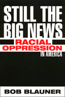

<body bgcolor="#FFFFFF" text="#000000" link="#0000FF" vlink="#CC0000" alink="#CC0000"><center><hr width="350" size="1" align="center" noshade>A forceful argument that matters of race and racism still divide us<hr width="350" size="1" align="center" noshade><p><a href="https://cdcshoppingcart.uchicago.edu/Cart/ChicagoBook.aspx?ISBN=9781566398732&&PRESS=temple" target="_top">Buy this book!</a> | <a href="https://cdcshoppingcart.uchicago.edu/Cart/Cart.aspx?PRESS=temple" target="_top">View Cart</a> | <a href="https://cdcshoppingcart.uchicago.edu/Cart/Cart.aspx?PRESS=temple" target="_top">Check Out</a></p><p></p></center><!--none//--><h1>Still the Big News</h1>
<H2>Racial Oppression in America</H2>
<h3>Bob Blauner</h3>
<P>cloth 1-56639-873-8 $84.50, Jun 01, <FONT COLOR=#990033>Out of Stock Unavailable</FONT>
<br>paper 1-56639-874-6 $31.95, Jun 01, <FONT COLOR=#990033>Available</FONT>
<BR> 288 pp
6x9
</P><BLOCKQUOTE><I>"Blauner's thoughtful writings reflect so much of our thinking on race matters in the last three decades&#151the exuberant theorizing, the rising uncertainties about what we really know about race and ethnicity, and the turning to the lives and voices of people themselves. Required reading for the twenty-first century&#151a time when we will all be minorities."</I>
<br>&#151<b>Ronald Takaki</b>, author of <I>A Different Mirror</I><I></I></BLOCKQUOTE>
<p>For more than thirty years, Bob Blauner's incisive writing on race relations has drawn a wide and varied audience. Whether his topic is the Watts riots in 1965, Chicano culture, or the tension between Blacks and Jews, his work is remarkable for its originality and candor. Beginning with the key essays of his landmark book, <I>Racial Oppression in America</I>, this volume makes the case that race and racism still permeate every aspect of American experience.
<p>Blauner launched his concept of internal colonialism in the turbulent 1960s, a period in which many Americans worried that racial conflicts would propel the country into another civil war. The notion that the systematic oppression of people of color in the United States resembles the situation of colonized populations in Third World countries still informs much of the academic research on race as well as public discourse. Indeed, today's critical race and whiteness studies are deeply indebted to Blauner's work on internal colonialism and the pervasiveness of white privilege. Offering a radical perspective on the United States' racial landscape, Bob Blauner forcefully argues that we ignore the persistence of oppression and our continuing failure to achieve equality at our own peril.
<BR>&nbsp;<h2>Excerpt</h2><P>Excerpt available at <a href="http://www.temple.edu/tempress">www.temple.edu/tempress</a></p>
<BR>&nbsp;<h2>Reviews</h2>
<p><I>"Bob Blauner's </I>Racial Oppression in America<I> was a landmark text, a beacon of radical enlightenment, for those of us in the 1970s and 1980s desperately seeking an intellectual framework for critiquing mainstream American sociology's mystifications on race. This revised and expanded edition, containing many new essays, and informed throughout by authorial hindsight and second thoughts, should win a new audience for a postwar classic of critical race theory."</I>
<br>&#151<b>Charles W. Mills</b>, Philosophy, University of Illinois at Chicago, and author of <I>The Racial Contract</I>
<BR>&nbsp;<h2>Contents</h2><P>
<p>Preface
<br>Acknowledgments
<p><b>Part I: The Emergence of a Critical Race Theory</b>
<br>1. Almost a Race War: The Climate of the Late 1960s
<br>2. Theoretical Perspectives
<br>3. White Privilege: The Key to Racial Oppression
<br>4. Colonized and Immigrant Minorities
<br>5. Internal Colonialism and Ghetto Revolt
<br>6. Racism and Culture
<br>7. Black Culture and Its Critics
<p><b>Part II: Institutionalized Racism</b>
<br>8. Whitewash over Watts: The Politics of the McCone Commission
<br>9. Jury Selection in the Huey Newton Murder Trial
<br>10. More Than Just a Footnote: Chicanos and Their Movement
<br>11. Toward the Decolonization of Social Research
<p><b>Part III: Rethinking Critical Race Theory in a New Era</b>
<br>12. Some Self-Critical Reflections on Colonized and Immigrant Minorities
<br>13. Talking Past One Another: Black and White Languages of Race
<br>14. White Radicals, White Liberals, White People: Rebuilding the Anti-Racist Coalition
<br>15. Blacks and Jews: A Study in Ambivalence
<br>16. Race in the 2000 Election: Still the Big News
<p>Notes
</P><BR>&nbsp;<H2>About the Author(s)</H2>
<table><tr><td valign="top"><img src="/tempress/authors/1566_au.gif" height="90" width="75"></td><td width="100%" valign="middle"><p><b>Bob Blauner</b> is Professor Emeritus, Department of Sociology, University of California, Berkeley, and a freelance writer.</P></td></tr></table>
<BR><H2>Subject Categories</H2>
<p><A HREF="/tempress/sociology.html" TARGET="_top">Sociology</a>
<BR><A HREF="/tempress/race.html" TARGET="_top">Race and Ethnicity</a>
<BR><A HREF="/tempress/african.html" TARGET="_top">African American Studies</a>
</p>
<p align="center"><a href="https://cdcshoppingcart.uchicago.edu/Cart/ChicagoBook.aspx?ISBN=9781566398732&&PRESS=temple" target="_top">Buy this book!</a> | <a href="https://cdcshoppingcart.uchicago.edu/Cart/Cart.aspx?PRESS=temple" target="_top">View Cart</a> | <a href="https://cdcshoppingcart.uchicago.edu/Cart/Cart.aspx?PRESS=temple" target="_top">Check Out</a></p><p><font face="Arial" size="1"><a href="copyright.html" onMouseOver="window.status='Web Copyright Policy';return true;" onMouseOut="window.status=''" title="Web Copyright Policy">&copy;</a> 2015 <a href="http://www.temple.edu" target="new" onMouseOver="window.status='Link to Temple University home page';return true;" onMouseOut="window.status=''" title="Link to Temple University home page">Temple University</a>. All Rights Reserved. http://www.temple.edu/tempress/titles/1566_reg.html</font></p>